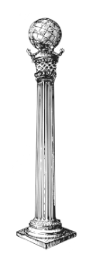

 Por que iniciar? É indiscutível que, em um primeiro momento, receber um convite para ingressar na Maçonaria possa assumir sentimentos paradoxais. Isto porque ao mesmo tempo em que a Maçonaria desperta atração, também pode suscitar reserva ou mesmo certos temores àqueles que começam a pesquisar sobre o tema. E justamente por ser uma ordem muito antiga, acaba por acumular muitos fatos e lendas. Alguns poderão dizer que fica bem difícil julgar os benefícios de integrar a Maçonaria. Outro até dirão que seriam, em suma, benefícios financeiros. A verdade é que, uma das formas de avaliar a ordem é observar seus integrantes e suas ações na sociedade. A Maçonaria é um espaço para aperfeiçoamento dos costumes, instrução, disciplina, fraternidade e convivência. E tais aspectos atuam como motivadores e condições não só para o ingresso, mas para a permanência entre nós. Uma vez aceito e participante ao quadro de uma Augusta e Respeitável Loja Maçônica, o maçom poderá: Desenvolver atividades estritamente maçônicas de caráter litúrgico e/ou administrativo, mediante a congregação fraterna, proativa e observada a obediência aos estatutos e princípios colimados pela Ordem Maçônica; Aperfeiçoar faculdades e vocações, que já lhe são intrínsecas, servindo-se delas de maneira profícua em prol de sua profissão ou ainda, em benefício da Instituição Maçônica, caso esta venha necessitar, sem que isso lhe comprometa a manutenção de suas necessidades pessoais e familiares; Agregar valores e conhecimentos, que servirão ao seu engrandecimento moral, intelectual e humano; Desenvolver sua capacidade de liderança, contribuindo para o progresso de seus semelhantes, de suas famílias, de sua comunidade e de seu país; bem como poderá desfrutar de sua Loja como espaço de acolhimento de seus familiares; Cultivar o seu autoconhecimento, tornando-se indivíduo confiante e capaz de lidar com conflitos e superá-los; Moderar sua espiritualidade e exercitá-la, independentemente de seu credo particular, tornando-a livre de superstições, fundamentalismos e prezando pelo respeito à convicção religiosa de cada indivíduo. É fundamental que desde o interesse primevo até o ingresso na Maçonaria deve ser livre de intenções banais e de aspectos meramente individualistas por parte do candidato. A forma tradicional é através da indicação por um Mestre Maçom. Após a aprovação da Loja, inicia-se todo um processo de avaliação do candidato, que poderá demorar alguns meses. A admissão não é um processo imediatista, ela deve levar o tempo que for necessário para a devida apreciação e deliberação por parte do quadro de membros da Loja. É imprescindível que a Loja se certifique sobre as intenções e caráter do candidato, bem como, de que o ingresso seja benéfico para a família maçônica. O postulante deve estar imbuído de um sentimento de busca de valores e ensinamentos, que o levem à elevação de suas faculdades e comportamentos sociais. Brasil Já sabemos que a maçônaria contemporânea surgiu na Inglaterra no século XVIII e expandiu-se rapidamente por vários países. Existem muitos indícios de brasileiros iniciados na Europa já no século XVIII. A existência de atividades maçônicas regulares só se comprovou no território brasileiro a partir de 1801, no Rio de Janeiro, segundo o testemunho de José Bonifácio de Andrada e Silva, que se tornaria oprimeiro grão-mestre do Grande Oriente do Brasil (GOB) em junho de 1822, ocasião em que a entidade teve papel importante na articulação da Independência. Nesse período havia considerável quantidade de maçons na igreja católica. E ao longo do século XIX a maçonaria foi marcante para a abertura de espaços de sociabilidade e novas práticas de cidadania no Brasil: seus membros mantinham apoio ou faziam oposição aos governos imperiais, posicionando-se pró ou contra a abolição da escravidão e à forma republicana de governo. Temos maçons como Luís Alves de Lima e Silva (Duque de Caxias) e Paulino Soares de Sousa (visconde de Uruguai), além de republicanos como Saldanha Marinho e abolicionistas como José do Patrocínio. A Questão Religiosa O conflito entre a Igreja católica e a maçonaria atingiu proporções intensas com a chamada Questão Religiosa na década de 1870, levando a um confronto entre a Coroa imperial e a Igreja, com repercussões no período republicano. Em 1888 o grão-mestre do GOB era João Alfredo de Oliveira, chefe do gabinete ministerial que decretou a Lei Áurea. A maior parte dos maçons eram pessoas pouco conhecidas que viviam em capitais ou cidades do interior das províncias, como advogados, comerciantes, militares e funcionários. As maçonarias estruturam-se em lojas (unidades de base) que, reunidas, formavam um Grande Oriente, uma Grande Loja ou Supremo Conselho, a depender dos ritos escolhidos e do perfil de atuação (simbólico ou filosófico). Seus membros formavam uma hierarquia fechada ao exterior e vertical internamente, que ascendia a partir de graus. Os graus básicos eram aprendiz, companheiro e mestre. Cada loja tinha sua própria hierarquia, na qual o posto de venerável era o mais alto. Cada agrupamento maior, como um Grande Oriente, também tinha seus postos hierarquizados, sendo superior o de Grão-Mestre.